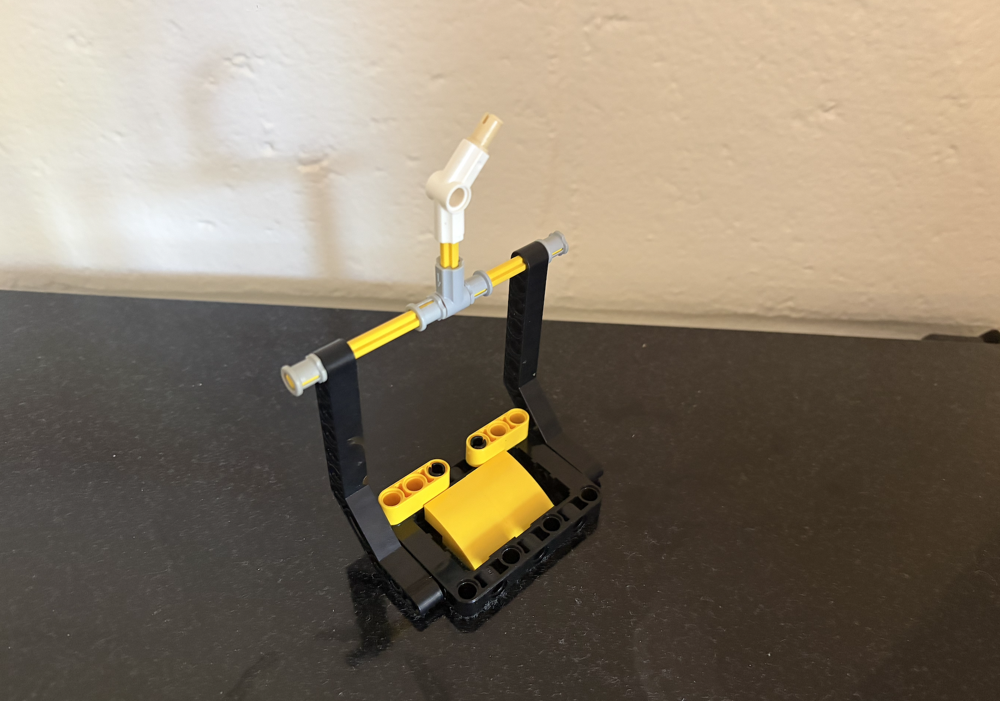
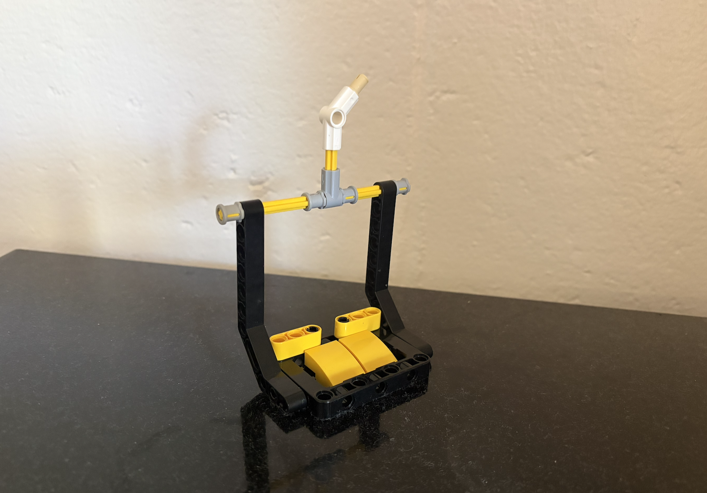

I made a small ski chairlift out of legos. My inspiration behind building a ski lift is how every winter I would go up to New Hampshire and ski over the weekend. I did ski racing (both GS and Slalom) and taught kids how to ski, so skiing has always been a huge part of my life. I had a hard time picking out pieces to use, as most didn’t fit into the chair size that I picked and also to make the grip that connects the chair to the cable, as those pieces were not in the kit. When I was done building, I noticed that I used mainly black and yellow pieces, which is a funny coincidence because my dad and I are big Boston Bruins fans, and those are their colors.